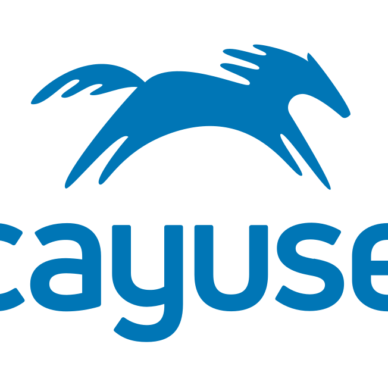
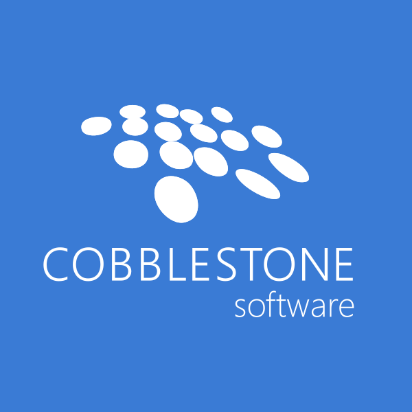

Ask the bot about my work.
This portfolio is organized like a product: you can browse, but the fastest path is to ask.
Portfolio
About
About Me
Hi, I’m Jacob. I’m a UX Designer from the Philadelphia region.
As a UX Designer, I’m passionate about creating intuitive, user-friendly experiences that solve real-world problems. With a B.S. in Human Centered Computing (HCC) and a minor in Japanese from Rochester Institute of Technology (RIT), I bring a unique perspective to every project I work on.
In addition to my professional pursuits, I enjoy hiking, live music, and video games. Additionally, I'm currently learning to play the drums.
If you’re interested in working together or want to learn more about my design philosophy, please don’t hesitate to get in touch.
What you’ll find here
- Case studies with decisions, trade-offs, and learnings.
- Artifacts (flows, wireframes, UI, motion, and rationale).
- Impact where available (shipping, differentiation, adoption signals).
Skills
Core
Tools
Experience
-

Contract UX Designer — CayuseNov 2025 – Present • Remote- Collaborate with designers and stakeholders to update designs for iRIS.
- Create wireframes and design deliverables in Figma.
-

UX Designer — Cobblestone SoftwareNov 2023 – Oct 2025 • Lindenwold, NJ- Designed new and existing features for Contract Insights (contract management + procurement).
- Led redesign of the external Vendor Client Gateway module.
- Produced handoff-ready wireframes and specs in Figma.
-
Product Designer — BuxtonJun 2022 – Oct 2022 • Remote, USA
- Designed data-driven product experiences across multiple platforms.
- Launched 3 products (100+ screens) in 3 months.
- Centralized and streamlined the design system to reduce weekly design time.
-
UX Co-op — LenelS2Jun 2021 – Dec 2021 • Pittsford, NY
- Led end-to-end design for a new guest access feature (Guest Pass) in Elements.
- Migrated a 50+ component library from Sketch to Figma and improved system consistency.
- Created dark mode variations of design system components.
-
Front-end Development Intern — Tamago DB K.K.Jun 2019 – Aug 2020 • Shinagawa, Tokyo, JP
- Modernized analytics visualizations by replacing a legacy charts library.
- Tested and debugged locally using Laragon, improving iteration speed.
- Improved UI quality across a Symfony codebase with HTML/CSS/JS updates.